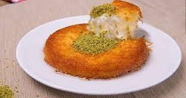

Künefe Tarifi İçin Malzemeler
Şerbeti İçin
- 2 su bardağı toz şeker
- 2 su bardağı su
- 1 yemek kaşığı limon suyu
Künefe Tarifi Nasıl Yapılır?
- Sıcak künefenin üzerine gezdireceğiniz soğumuş şerbeti hazırlamak için; toz şeker ve suyu tencereye alın. Ocağa aldığınız şerbet karışımını aralarda karıştırarak kısık ateşte kaynatın.
- Yaklaşık 20-25 dakika kadar kaynayan ve kıvam alan şerbete limon suyu ekleyip karıştırdıktan sonra ocaktan alın. Soğuması için bir kenarda bekletin.
- Tel kadayıfı geniş bir kaba alın. Elinizle tel tel açıp küçük parçalar haline getirin. Erittiğiniz tereyağını kattıktan sonra kadayıf tellerini açmaya devam ederek tereyağını kadayıflara yedirin.
1 porsiyon künefe 968 kaloridir.
